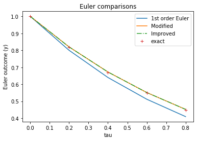
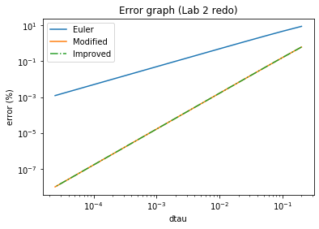
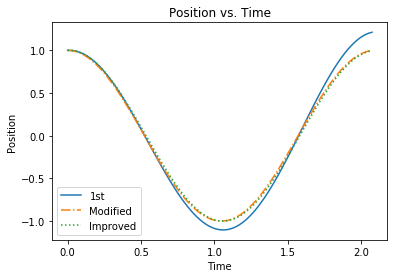
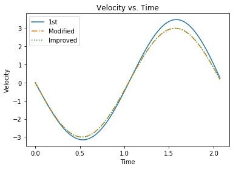
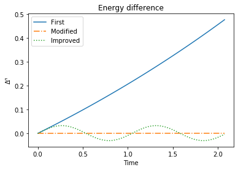
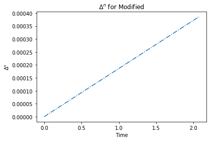
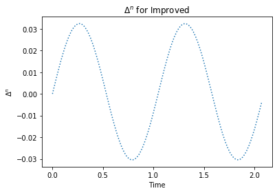
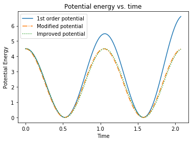
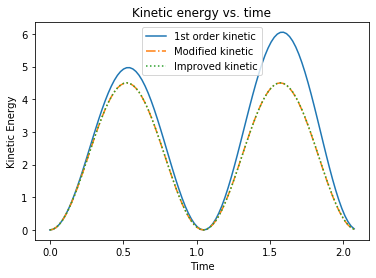

Choose \(\gamma_1\), \(\gamma_2\), and \(\alpha\) such that the method is consistent with the Taylor series expansion through second order in \(\Delta t\) (leading term in the truncation error is \(\mathcal{O}((\Delta t^3))\), i.e.,
Suppose we wish to test whether two variables \(y and x\) satisfy some particular functional relationship \(y = f(x)\). The simplest relation is linear, i.e., y = mx +b. The existence of such a relationship can be seen by plotting \(y\) vs. \(x\).
Now suppose that \(y\) is not a linear function of \(x\). For instance, \(y(x)\) could be of the form
\[ y(x) = A e^{rx}\]
where \(A\) and \(r\) and unknown parameters.
We can take the natural logarithm of both sides, giving
\[ \ln y = \ln A + rx\]
A plot a \(\ln y\) vs. \(x\) (semi-log) would be a straight line with slope \(r\) and intercept \(\ln A\).
Now consider a power law function of the form
\[ y(x) = A x^r\]
Taking the natural log of both sides yields
\[\ln y = \ln A + r \ln x\]
In this case, plotting \(\ln y\) vs. \(\ln x\) (log-log) gives a straight line with slope \(r\) and intercept \(\ln A\).
Compute the numerical values of the period \(T\) for different values of \(\omega_0\). Assume that \(T \propto (k/m)^\alpha\) and estimate the exponent by making a log-log plot of \(T\) vs. \(k/m\).
#Name: Jasmine Kobayashi#Lab 4: SHO & Second order methods#Date: 2/6/20#---------------------------------------------------------------------------------------------------------------------------import numpy as npimport matplotlib.pyplot as pltfrom sklearn.linear_model import LinearRegression#---------------------------------------------------------------------------------------------------------------------------om0 = np.linspace(1,10,100) #omega valuesTa = [] #period valuesfor i inrange (0,len(om0)): Tp =2*np.pi/(om0[i]) Ta.append(Tp)#T vs. omega plot plt.figure(1)plt.plot(om0**2,Ta)plt.title("Period (T) vs. Omega$^2$($\omega^2$)")plt.xlabel("$\omega^2$ (k/m)")plt.ylabel("Period T")# plot ln(T) vs. ln(k/m)plt.figure(2)plt.plot(np.log(om0**2),np.log(Ta))plt.title("Log-Log Plot")plt.xlabel("log(k/m)")plt.ylabel("log(T)")#linear regressionom = LinearRegression()お = np.log(om0**2)お = お.reshape((-1,1))om.fit(お,np.log(Ta))print("Exponent of k/m =", om.coef_)
Exponent of k/m = [-0.5]
Exercise 2: Truncation error
Write python functions for modified Euler and improved Euler. Try to generalize as much as possible (i.e., don’t make the function dependent on a particular ODE like exponential decay vs. SHO).
Repeat the last part of Lab 2 (truncation error), solving the dimensionless ODE, comparing the %error \(\tau = 1\). Plot %error vs. \(d\tau\) for each of the three methods. Are the second order methods \(\propto \Delta t^2\) (plot log-log)?
# Use your dimensionless ODO function from lab 2 here. Add functions for modified and improved Euler.import numpy as npimport matplotlib.pyplot as pltfrom sklearn.linear_model import LinearRegression#---------------------------------------------------------------------------------def F(y0): #dy/dx = -yreturn-y0 #---------------------------------------------------------------------------------#---------------------------------------------------------------------------------def euler(dtau,tau,y0):#y0 is y(tau=0), initial condition#tau is the dimensionless time array#dtau is the time step y = [] #initialize an array for the output y.append(y0)for n inrange(1,len(tau)): y0 = y0 + F(y0)*dtau y.append(y0) #add the n+1 value to y arrayreturn y#---------------------------------------------------------------------------------#---------------------------------------------------------------------------------def euler_modified(dtau,tau,y0):#y0 is y(tau=0), initial condition#tau is the dimensionless time array#dtau is the time step y = []for n inrange(0,len(tau)): y.append(y0) yph = y0 + (F(y0)*dtau/2) #F^n+(0.5) y0 = y0 + F(yph)*dtau #y^n+1 using F^n+0.5return y#---------------------------------------------------------------------------------#---------------------------------------------------------------------------------def euler_improved(dtau,tau,y0):#y0 is y(tau=0), initial condition#tau is the dimensionless time array#dtau is the time step y = []for n inrange(0,len(tau)): y.append(y0) ypi = y0 + F(y0)*dtau #F^n+1 y0 = y0 + (F(y0)+F(ypi))*dtau/2#y^n+1 using F^n & F^n+1return y#---------------------------------------------------------------------------------#set up tau arraytau_final =1.0dtau_array =[]dtau =0.2for i inrange(14): dtau_array.append(dtau) dtau = dtau/2.dy_array = []y0 =1.0#Euler Graphs---------------------------------------------------------------------plt.figure(1)dtau =0.2tau = np.arange(0,tau_final,dtau)plt.plot(tau,euler(dtau,tau,y0),label='1st order Euler')plt.title("Euler comparisons")plt.xlabel("tau")plt.ylabel("Euler outcome (y)")#Add a comparison of the secord order methodsplt.plot(tau,euler_modified(dtau,tau,y0),label="Modified")plt.plot(tau,euler_improved(dtau,tau,y0),"-.",label="Improved")plt.plot(tau,np.exp(-tau),'+',label='exact')plt.legend()#Lab 2 repeat--------------------------------------------------------------------dy_m = [] #dy for modifieddy_i = [] #dy for improvedfor i inrange(len(dtau_array)): tau = np.arange(0,tau_final,dtau_array[i]) y = euler(dtau_array[i],tau,y0)#add second order methods dy_array.append(100*(abs(y[-1]-np.exp(-tau[-1]))/np.exp(-tau[-1]))) mod = euler_modified(dtau_array[i],tau,y0) imp = euler_improved(dtau_array[i],tau,y0) dy_m.append(100*(abs(mod[-1]-np.exp(-tau[-1]))/np.exp(-tau[-1]))) dy_i.append(100*(abs(imp[-1]-np.exp(-tau[-1]))/np.exp(-tau[-1])))#Lab 2 Error Graph----------------------------------------------------------------plt.figure(2)plt.plot(dtau_array,dy_array,label='Euler')#add second-order plotsplt.plot(dtau_array,dy_m,label ="Modified")plt.plot(dtau_array,dy_i,"-.",label ="Improved")plt.xlabel('dtau')plt.ylabel('error (%)')plt.title("Error graph (Lab 2 redo)")plt.yscale('log')plt.xscale('log')plt.legend()#use linear regression to determine the slope. model=LinearRegression()x = np.log(dtau_array)x = x.reshape((-1,1)) #What does reshape do? Look it up and try printing before and after.model.fit(x,np.log(dy_array))print('slope 1st order =', model.coef_)second=LinearRegression()second.fit(x,np.log(dy_i))print("second order slope =", second.coef_)
slope 1st order = [0.99153445]
second order slope = [1.99549552]


Exercise 3: Simple harmonic oscillator (SHO)
Now apply the three Euler ODE methods to the SHO problem (mass on a spring) and compute \(\Delta^n\) (homework) over one cycle.
Plot the numerical solutions with the analytical solution [\(x(t) = A \cos(\omega_0 t + \delta)\)].
Plot the time dependence of the potential energy and the kinetic energy through one cycle. Where in the cycle is the kinetic energy a maximum?
#Simple Harmonic Oscillatoromega2 =9#omega^2 = (k/m) (k= spring constant,m = mass)T =2*np.pi/np.sqrt(omega2) #Period (units = seconds)dt =0.01*T #time step, in relation to periodx0 =1.0#Initial position (displacement from equilibrium position) (units=meters?)v0 =0.0#Initial velocity (m/s?)def vdot(omega2,x0): #acceleration(dv/dt)(b/c x"(t) = -omega^2*x); just to make F^n for velocity easier to identifyreturn-omega2*x0#-----------------------------------------SHO Euler Functions---------------------------------------------------------------#First order Eulerdef SHO(x0,v0,omega2,T,dt): #Simple Harmonic Oscillator (outputs, array of position, vel., and time of 2 periods) x = [] #position (disp. from equi. position) v = [] #velocity time = [] #time t =0.0#initial time tfinal = T #ends after one period(one cycle)while t < tfinal: time.append(t) x.append(x0) v.append(v0) vp = v0 + vdot(omega2,x0)*dt #F^n+1 = v^n+1 = v^n + (dv/dt)*dt x0 = x0 + v0*dt #x^n+1 = x^n + (F^n)*dt v0 = vp t = t+dtreturn x, v, time#Modified Eulerdef SHO_mod(x0,v0,omega2,T,dt): xm = [] #position (disp. from equi. position) vm = [] #velocity time_m = [] #time t =0.0#initial time tfinal = T #ends after one period(one cycle)while t < tfinal: time_m.append(t) xm.append(x0) vm.append(v0) xph = x0 +(0.5)*v0*dt #x^n+0.5 = x^n + (1/2)*(F^n)*dt vp = v0 + vdot(omega2,xph)*dt #F^n+1; v^n+1 using x^n+0.5 vph = v0 + (vdot(omega2,x0)*dt)/2#F^n+0.5 (v^n+0.5) xp = x0 + vph*dt #x^n+1 = x^n + (F^n+0.5)*dt x0 = xp v0 = vp t = t + dt return xm, vm, time_m#Improved Eulerdef SHO_impr(x0,v0,omega2,T,dt): xi = [] #position (disp. from equi. position) vi = [] #velocity time_i = [] #time t =0.0#initial time tfinal = T #ends after one period(one cycle)while t < tfinal: time_i.append(t) xi.append(x0) vi.append(v0) xpi = x0 + v0*dt #x^n+1 = x^n + F^n*(dt); x^n+1 1st order that'll be used in 2nd order vp = v0 + vdot(omega2,xpi)*dt #F^n+1; v^n+1 using x^n+1 first order xp = x0 + (v0+vp)*dt*0.5#x^n+1 = x^n + (1/2)(dt)(F^n + F^n+1); Second order x^n+1 v0 = vp x0 = xpi t = t + dtreturn xi, vi, time_i[x,v,time] = SHO(x0,v0,omega2,T,dt)[xma,vma,時ma] = SHO_mod(x0,v0,omega2,T,dt)[xI,vI,時I] = SHO_impr(x0,v0,omega2,T,dt)#Difference in Energy-------------------------------------------------------------------------------------------------------E0_下m =(0.5)*omega2*(x0**2) #Initial energy (E0/m)print("Initial Energy=",E0_下m)#First orderE = [] #Total energy arraydif = [] #Difference in energy arrayfor k inrange(0,len(x)): Eom = (0.5)*v[k]**2+ (0.5)*omega2*(x[k]**2) #E/m = (1/2)v^2 + (1/2)(k/m)(x^2) E.append(Eom) d = (E[k]-E0_下m)/E0_下m #The difference of energy between initial and at a certain time step dif.append(d)#Second Order#Modified EulerEm = [] #Total energy (Modified)difm = [] #Difference in energy (Modified)EI = [] #Total energy (Improved)difI = [] #Diff. in energy (Improved)for i inrange(0,len(xma)): Eomm = ((0.5)*(vma[i]**2)) + ((0.5)*omega2*(xma[i]**2)) #Energy at time step n for modified Em.append(Eomm) dm = (Em[i]-E0_下m)/E0_下m #Difference in energy difm.append(dm)#Improved Euler for j inrange(0,len(xI)): Eomi = ((0.5)*(vI[j]**2)) + ((0.5)*omega2*(xI[j]**2)) #Energy at time step n for improved EI.append(Eomi) di = (EI[j]-E0_下m)/E0_下m #Difference in energy difI.append(di)
Initial Energy= 4.5
#Graphs#position vs timeplt.figure(1)plt.plot(time,x,label ="1st")plt.plot(時ma,xma,"-.",label ="Modified")plt.plot(時I,xI,":",label ="Improved")plt.legend()plt.title("Position vs. Time")plt.xlabel("Time")plt.ylabel("Position")#Velocity vs timeplt.figure(2)plt.plot(time,v,label ="1st")plt.plot(時ma,vma,"-.",label ="Modified")plt.plot(時I,vI,":",label ="Improved")plt.legend()plt.title("Velocity vs. Time")plt.xlabel("Time")plt.ylabel("Velocity")#Energy differenceplt.figure(3)plt.plot(time,dif,label ="First")plt.plot(時ma,difm,"-.",label="Modified")plt.plot(時I,difI,":",label ="Improved") plt.legend()plt.title("Energy difference")plt.xlabel("Time")plt.ylabel("$\Delta^n$")
Text(0, 0.5, '$\\Delta^n$')



#Close ups of Second order Energy differencesplt.figure(1)plt.plot(時ma,difm,"-.",label="Modified")plt.title("$\Delta^n$ for Modified")plt.xlabel("Time")plt.ylabel("$\Delta^n$")plt.figure(2)plt.plot(時I,difI,":",label ="Improved")plt.title("$\Delta^n$ for Improved")plt.xlabel("Time")plt.ylabel("$\Delta^n$")
Text(0, 0.5, '$\\Delta^n$')


Ex.3 cont.
Plot the numerical solutions with the analytical solution [\(x(t) = A \cos(\omega_0 t + \delta)\)].
Plot the time dependence of the potential energy and the kinetic energy through one cycle. Where in the cycle is the kinetic energy a maximum?
#Potential and Kinetic#First orderUE = [] #PotentialKE = [] #Kineticfor k inrange(0,len(x)): U = (0.5)*omega2*(x[k]**2) UE.append(U) K = (0.5)*v[k]**2 KE.append(K)#Second Order#ModifiedUEm = [] #Potential (Modified)KEm = [] #Kinetic (Modified)for i inrange(0,len(xma)): Um =((0.5)*omega2*(xma[i]**2)) UEm.append(Um) Km = ((0.5)*(vma[i]**2)) KEm.append(Km)#ImprovedUEi = [] #Potential (Improved)KEi = [] #Kinetic (Improved)for j inrange(0,len(xI)): Ui = ((0.5)*omega2*(xI[j]**2)) UEi.append(Ui) Ki = ((0.5)*(vI[j]**2)) KEi.append(Ki)#Graphsplt.figure(1)plt.plot(time,UE,label="1st order potential")plt.plot(時ma,UEm,"-.",label="Modified potential")plt.plot(時I,UEi,":",label="Improved potential")plt.legend()plt.title("Potential energy vs. time")plt.xlabel("Time")plt.ylabel("Potential Energy")plt.figure(2)plt.plot(time,KE,label="1st order kinetic")plt.plot(時ma,KEm,"-.",label="Modified kinetic")plt.plot(時I,KEi,":",label="Improved kinetic")plt.legend()plt.title("Kinetic energy vs. time")plt.xlabel("Time")plt.ylabel("Kinetic Energy")
Text(0, 0.5, 'Kinetic Energy')


#Maximum kinetic energykm = time[KE.index(max(KE))] #Time of max kinetic energy for first orderkmm = 時ma[KEm.index(max(KEm))] #Time of max kinetic energy for modifiedkmi = 時I[KEi.index(max(KEi))] #Time of max kinetic energy for improvedprint("Max kinetic energy at time="+str(km),"sec. for first order Euler.")print("Max kinetic energy at time="+str(kmm),"sec. for second order Euler.") #Only used time for 'modified' here for time of second order, but if I used time of 'improved' it would still be the same.(Which makes sense)
Max kinetic energy at time=1.5917402778188297 sec. for first order Euler.
Max kinetic energy at time=1.5707963267948977 sec. for second order Euler.